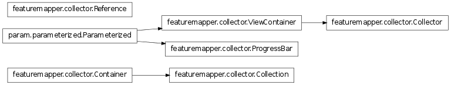

Bases: featuremapper.collector.Container
A Collection is a container that supports the creation of references to data not immediately accessible. This functionality is used by Collector to schedule analyses.
Bases: featuremapper.collector.ViewContainer
A Collector accumulates the output of arrays, measurements, analyses or miscellaneous View objects over time.
A deferred analysis that applies the given analysis function with the supplied keywords.
Schedules collection of measurement output containers returned by a MeasurementCommands.
alias of Collection
sleep(seconds)
Delay execution for a given number of seconds. The argument may be a floating point number for subsecond precision.
alias of ProgressBar
Bases: object
Container class for convenient attribute access used by ViewContainer. Containers have single level attribute access of Views by a label identifier and may be merged together using the update method.
Bases: param.parameterized.Parameterized
A simple text progress bar suitable for the IPython notebook.
Bases: object
A Reference object is a pointer to a view held by a Collector. A Reference allows data to be referenced when scheduling measurements before the data itself exists. For instance, this is useful to define the data to be input into an analysis ViewOperation.
References compose in the same ways as GridLayouts to allow complex accessed to be defined ahead of time. In particular, the * operator and general indexing is supported.
Bases: param.parameterized.Parameterized
A ViewContainer is a collection of Containers organised by a source identifier. This allows two level attribute access, first by source and then by label.
ViewContainers are designed to provide convenient access to large collections of dataview objects.